Display board · 11 letter pages: 7 about the project, 4 of screens. Print with margins: none and background graphics on.Lab Guide
WOODSTOCK HIGH SCHOOLWolverines · Ms. Audra Thomas
Vermiculture project-based learning
Worms, Wires & Wi-Fi
Every worm bin in our classrooms is a little science station, fed with scraps from our own cafeteria:
sensors in the dirt, a screen on the lid, and Wi-Fi that shares its readings every minute of every day.
50
smart worm bins, rolling out now
6
class periods, 3 classrooms
8
things each bin measures
60s
a fresh reading from every bin, all day, every day
4
Raspberry Pi servers on our own school network
?
Our driving questionHow do we keep thousands of red wigglers happy, and prove it with data?
WOODSTOCK HIGH SCHOOLWolverines · Ms. Audra Thomas
The project
How a smart worm bin works
Red wigglers turn our cafeteria's food scraps into castings, the rich compost gardeners call black gold. The school even set up a company so students can sell it to the public. Our job is to keep
the worms comfortable; the sensors tell us how they're doing.
1
Feed
Scraps from the school cafeteria and shredded paper go in. Worms eat, wiggle, and leave castings behind.
2
Sense
Sensors in and around the bin take readings twice a second. The screen on the lid shows them.
3
Share
Every minute the bin sends its readings over Wi-Fi to the classroom server, then up to the website.
What every bin keeps an eye on
Air temperatureinside the bin and out in the room
Humidityhow damp the air is
Air pressureweather moving through
Soil temperaturewaterproof probes in the bedding
Soil moisturenot too wet, not too dry
Lighthow bright it gets in the bin
Soundno ears, but do they feel it?
Bedding leveldrops as the worms eat their bedding
The worm comfort zone
°F · stripes: danger, the dashboard flags it
Bedding should feel like a wrung-out sponge.
Too wet and water fills the air pockets, and mold moves in. Our fan can switch on by humidity, soil moisture, or temperature.
They avoid light, yet often tunnel right along the glass.
The best part: some of this, nobody knows yet. We'll collect the data, find out,
and share what we learn so others can build on it.
No lungs. Worms breathe through their skin, so it has to stay moist. That's why we watch humidity so closely.
No eyes, either. They still sense light through their skin and dive for the dark. In a clear bin, you can watch them do it.
Big appetites. A healthy bin of red wigglers can eat about half its own weight in scraps every day.
WOODSTOCK HIGH SCHOOLWolverines · Ms. Audra Thomas
Meet the bin
Built, not bought
Many of our bins are clear 4-inch glass cylinders, so you can watch the worms tunnel from the side. The lid is
3D printed: big air holes on top, a case for the screen, and a tidy way in for the wires.
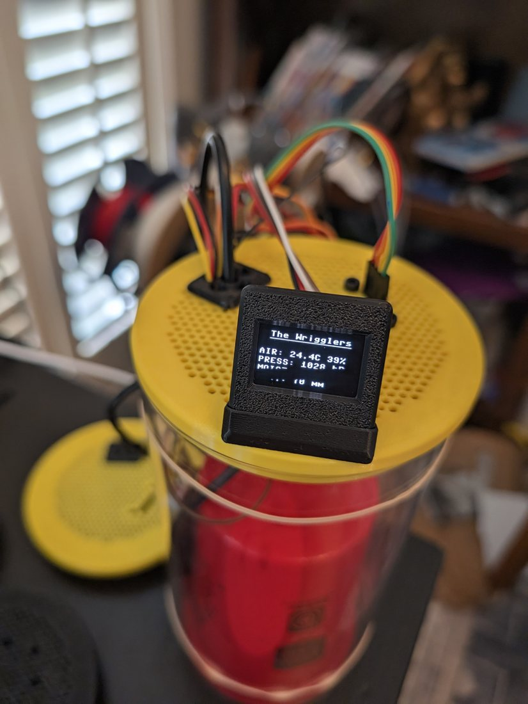
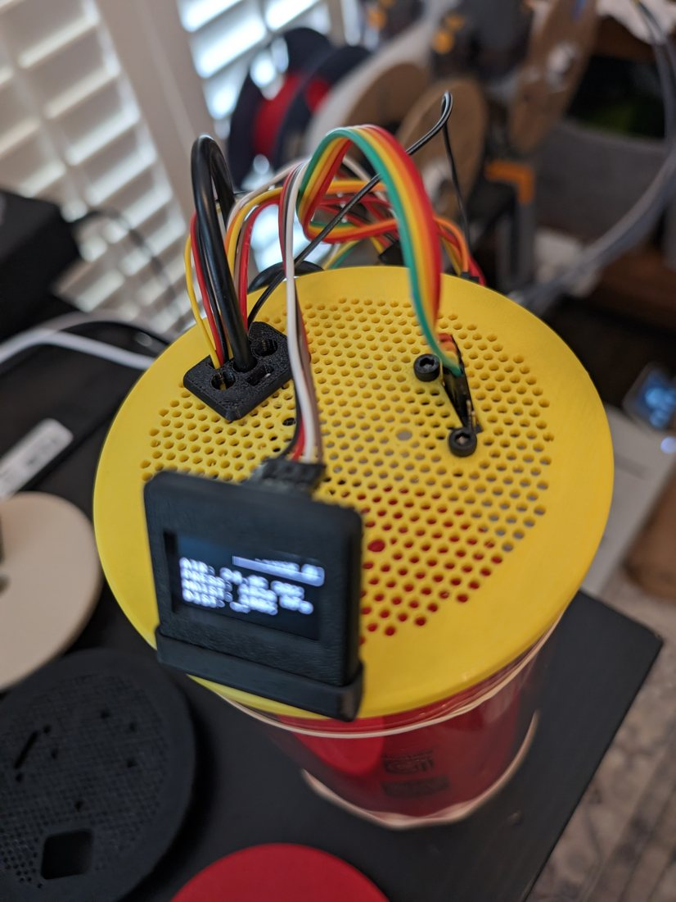
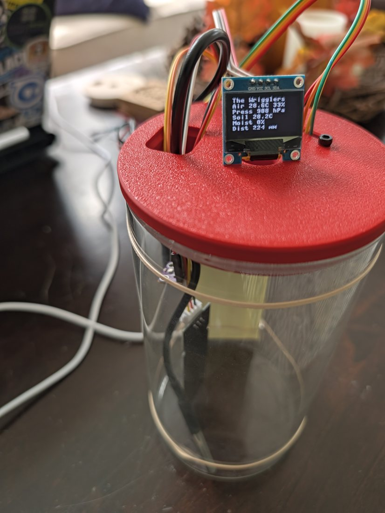
Clear wallsSee the bedding, the moisture and the worms themselves.
Printed lidA honeycomb of holes lets the bin breathe.
Screen casePrinted to fit, so the readings face the room.
A fanMoves air when it gets too damp inside.
WOODSTOCK HIGH SCHOOLWolverines · Ms. Audra Thomas
Along the way
What we're digging into
From a box of loose parts to working science stations, one step at a time. Here's what that takes.
Computing
Microcontrollers
A Raspberry Pi Pico 2 W is a computer the size of a stick of gum, and the brain of every bin. A few lines of MicroPython can read a sensor or switch on a fan.
Electronics
Circuits & breadboards
Ohm's law, resistor color codes, and why some sensors need a pull-up resistor. On a breadboard, any circuit can be tried before anything is permanent.
Hands-on
Soldering
Header pins on every board: a hot iron, a steady hand, and shiny joints instead of dull, cold ones. Each board gets tested before it goes in a bin.
Sensors
Sensors, many ways to talk
Our favorite is I2C: a screen and a pile of sensors share the same two wires. The soil probes speak other languages, each with its own wiring.
Networking
Wi-Fi, routers & servers
Behind the scenes, a reading travels from a bin, through a classroom router and a Raspberry Pi server, to a website anyone can open.
Data
Data & visualization
Every reading can be exported and charted. Turn a month of numbers into pictures, compare bins side by side, and spot what nobody would by eye.
Biology
Real worm science
What red wigglers need to turn cafeteria scraps into castings, and data we can give back to everyone who studies and raises worms.
True story
Debugging, for real
Our first fan only twitched. The culprit: a diode in backwards, which cooked a transistor. Now we always check which way the stripe faces.
Things break. We find out why, fix it, and write it down so the next team doesn't have to learn it the hard way.
WOODSTOCK HIGH SCHOOLWolverines · Ms. Audra Thomas
Up next
Where we're headed
The bins are running. First, students design their own experiments. Next semester, they design and 3D print parts for them.
Experiments
Each team picks a question, chooses its sensors, and plans how to test it. Every bin becomes a different experiment.
3D CAD
Design the parts on the computer first: measure, model, tweak, and check the fit before anything gets printed.
Slicing (CAM)
Slicing software turns a 3D model into the layer-by-layer instructions a 3D printer follows.
3D printing
Print custom sensor mounts, lid brackets, and a snug case for each bin's computer and screen.
Experiments
More data, new questions
Ten temperature probes in one bin to map its warm spots. New sensors. Even nudging the worms: a tiny vibration motor, or a servo that taps the glass. Does tapping really bother them?
Creativity
Make the screens our own
Program the screen to show what each team cares about, and draw pixel-art animations for it. The wolverine already made the cut.
Science
Real science, real data
Build gear that survives damp air and curious hands, then collect data worth sharing. We plan to publish what we find.
Business
From scraps to sales
The school started a company so students can sell our worm castings to the public. Healthy bins make better soil to sell.
Help Woodstock High grow
Sensor kits and boards, so every team has its own
3D printer filament and parts for the next builds
3D printers and design software
Worms, bins, and bedding for more classrooms
Let's talk!Stop by our bins, or reach Ms. Audra Thomas Woodstock High School
WOODSTOCK HIGH SCHOOLWolverines · Ms. Audra Thomas
Questions we could chase
A lab in every bin
Every bin logs its readings around the clock. Once all 50 are running, that's over two million readings a month,
and every one of them is a clue. Here are a few questions to start; students will design experiments of their own.
Starter
Does the bin keep its cool?
Compare the sensor inside the bin with the one in the room. Does the bedding smooth out the room's ups and downs?
Starter
A bin's daily rhythm
Do bins have a day and night cycle like the outdoors? A few days of readings will tell.
Solid
The feeding spike
Log feeding times, then look at the charts. Does the bin warm up in the hours after a fresh meal?
Solid
Watch the bedding shrink
How fast do the worms eat through their bedding? Each feeding should show up as a little bump.
Solid
Bedding showdown
Newspaper, cardboard or coconut coir: which one holds moisture longest? Three bins, one winner.
Solid
Pressure as a weather clue
Can a falling pressure reading inside the bin warn us that rain is on the way outside?
WOODSTOCK HIGH SCHOOLWolverines · Ms. Audra Thomas
Bigger ideas
Worm behavior, gadgets & moonshots
Study what worms do, build gadgets that care for the bins, and dig into a whole month of data.
Starter
Do worms pick a side?
Give them a bright half and a dark half, with the light sensor to prove the difference. Where do they end up?
Solid
Music for worms
Play tones through a speaker, with a microphone to confirm the sound got there. Do worms react to any of them?
Gadget
Self-tending bins
A mister that waters when the bedding dries out, and an alarm for when it's time to harvest.
Moonshot
Worm migration map
Warm one corner, cool another, and fill the bin with temperature probes. Can we follow the worms by the heat they leave behind?
Moonshot
Can we hear worms move?
A sensitive vibration sensor in a quiet bin. Could the wiggles tell us how many worms live there?
Moonshot
The bin observatory
Every sensor, one bin, a whole month. Dig through the data for the story nobody saw coming.
Most of these use sensors our bins already have. Even better: the experiments students dream up themselves.
WOODSTOCK HIGH SCHOOLWolverines · Ms. Audra Thomas
On the big screen
Mission control, seven ways
Same bins, same live numbers, seven different looks for the classroom projector. Pick your favorite.
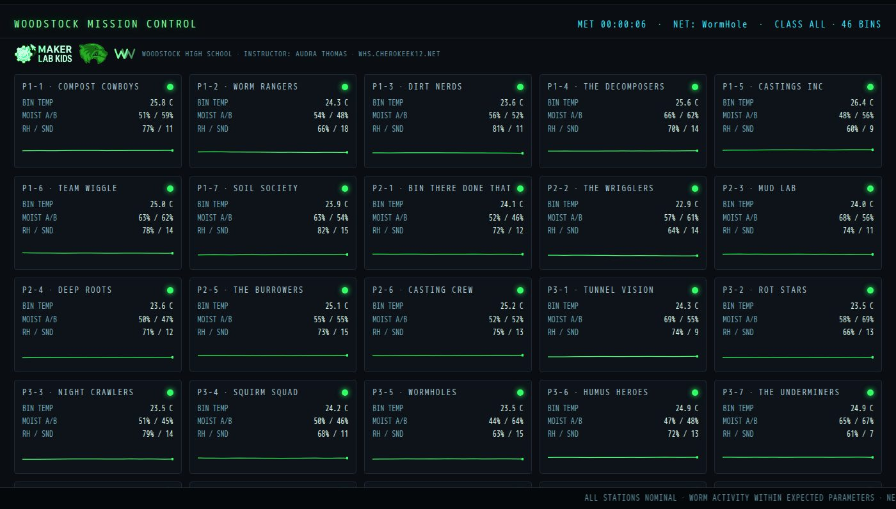
Flight Deck. Every bin in the school on one screen, like NASA's mission control. A tile flashes amber when something needs a look.
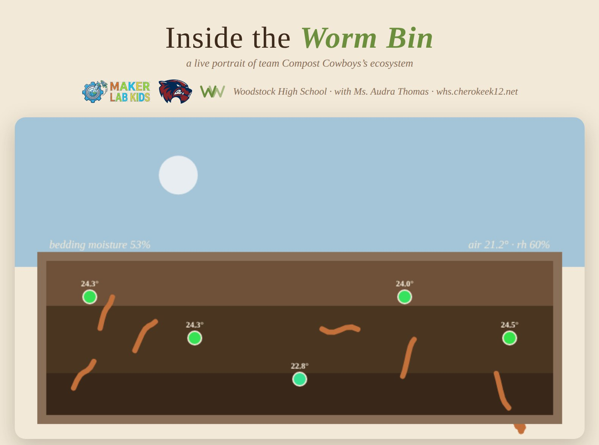
The Living Bin. A cutaway of one team's bin, drawn from its real readings.
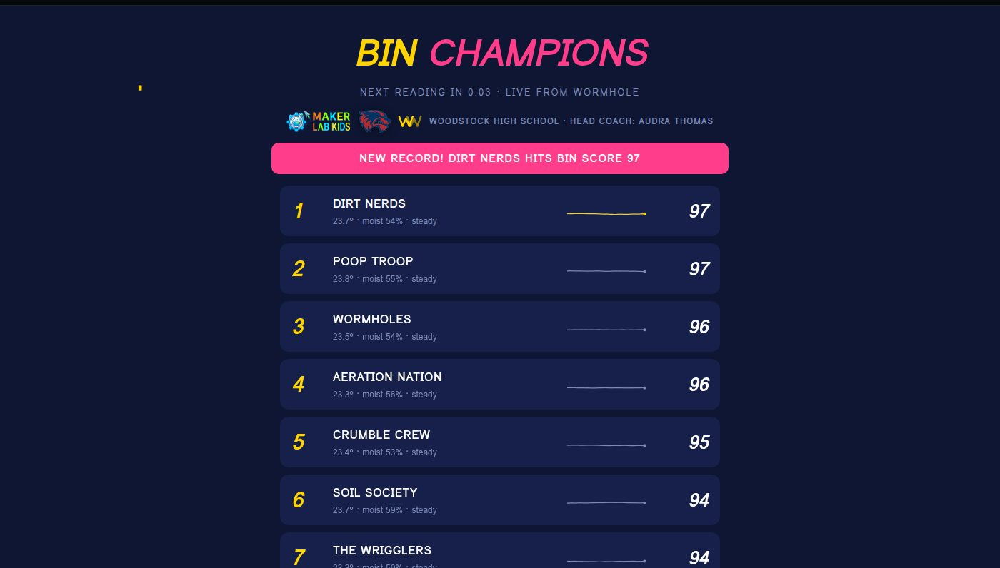
The Leaderboard. Bin scores, ranked. Yes, the teams take it seriously.
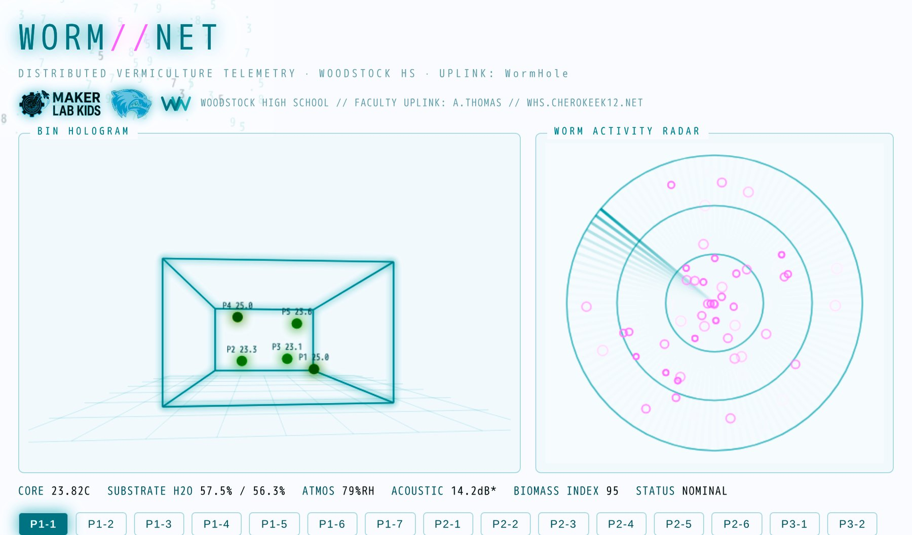
WORM//NET. A hacker-movie look, with a 3D bin and a worm radar.
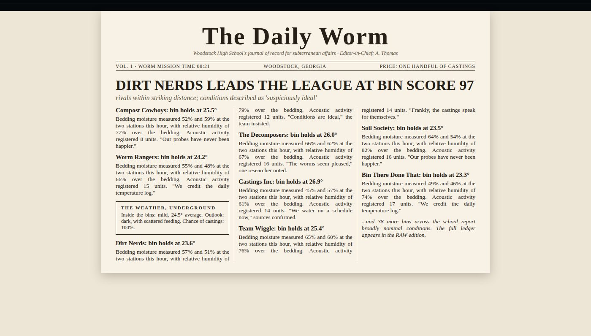
The Daily Worm. The day's readings, written up as a newspaper.
WOODSTOCK HIGH SCHOOLWolverines · Ms. Audra Thomas
On the bin, and on your phone
Little screens, big data
Each bin has a 128×64-pixel screen on its lid. At power-on it plays a show; the rest of the day it shows the bin's readings and messages from the team.
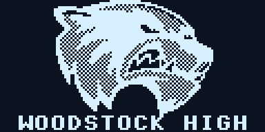
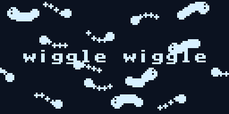
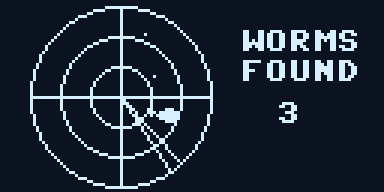
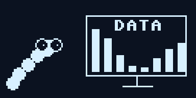
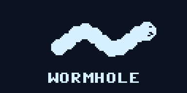
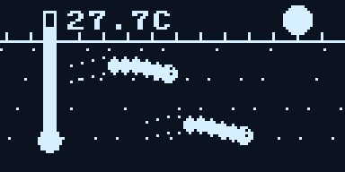
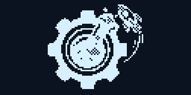
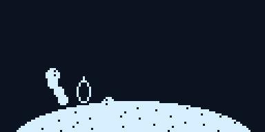
Real frames from the bins' screens. Students draw their own in a free pixel-art editor and send them to their bin over Wi-Fi.
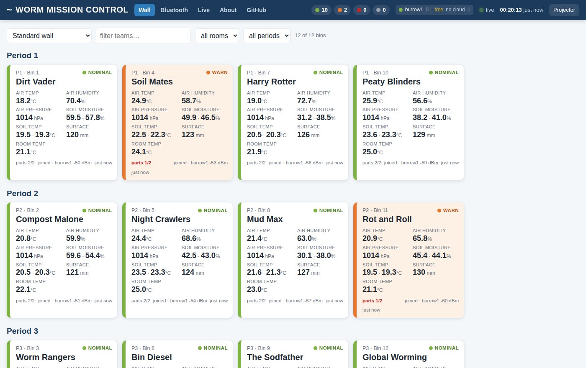
The wall. Every bin, grouped by class period, updating live. Green is happy; amber means take a look.
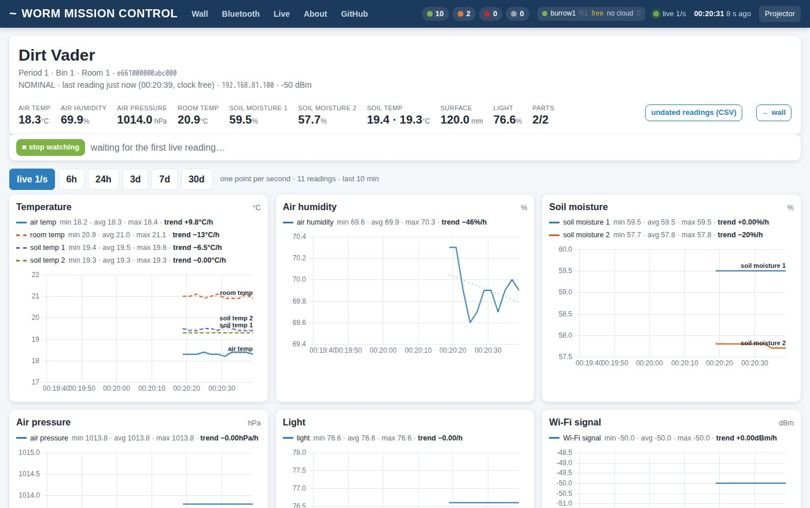
One bin, up close. Tap a bin for its charts: the last hour, day, week or month, or live, one reading a second.
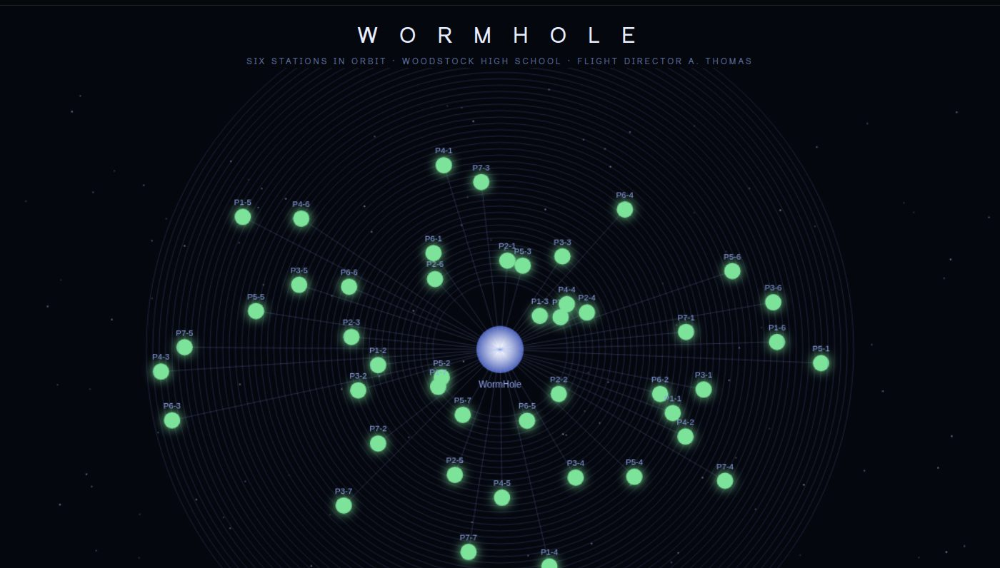
Orbital. All 46 demo bins circling the Wormhole.
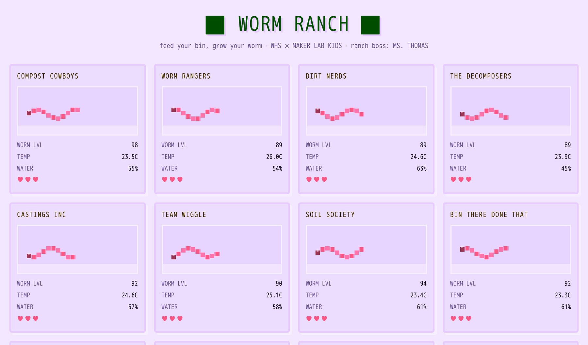
Worm Ranch. Each bin as a pixel pet. Keep your worm happy!
WOODSTOCK HIGH SCHOOLWolverines · Ms. Audra Thomas
Under the hood
How it all connects
We named every piece the way a worm would. Readings tunnel up from the bins, through the classrooms, to the surface where anyone can see them.
Wi-Fi drops?
Each bin saves its readings on its own memory and sends them all once the network's back. Nothing gets lost.
Internet out?
Every classroom's Burrow keeps its own copy, so the bins and screens keep right on working.
A server dies?
A spare Raspberry Pi takes over the room by itself. We've already seen one do it.
Bina worm bin with its own little computer
Burrowthe Raspberry Pi server in each classroom
Tunneleach classroom's Wi-Fi router
Portalthe main router, out to the internet
Surfacethe website, where anyone can see it all
WOODSTOCK HIGH SCHOOLWolverines · Ms. Audra Thomas
Wiring it up
From breadboard to bin
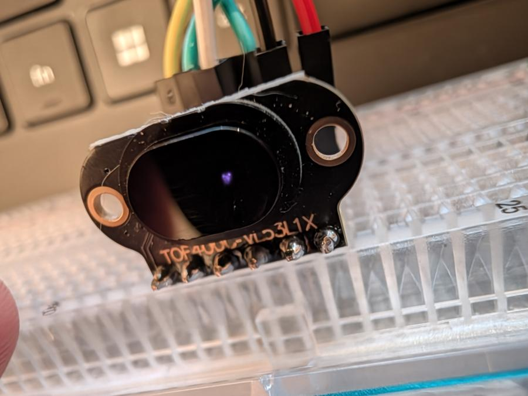
That purple dot is a laser. A sensor like this times light bouncing off the bedding, down to the millimeter. We watch for change: worms eat their bedding too, so the level slowly drops, and every feeding bumps it back up.
Every sensor gets the same treatment: a wiring diagram, a breadboard test, then into the bin.
3.3 V powergroundI2C dataI2C clocksignal5 V
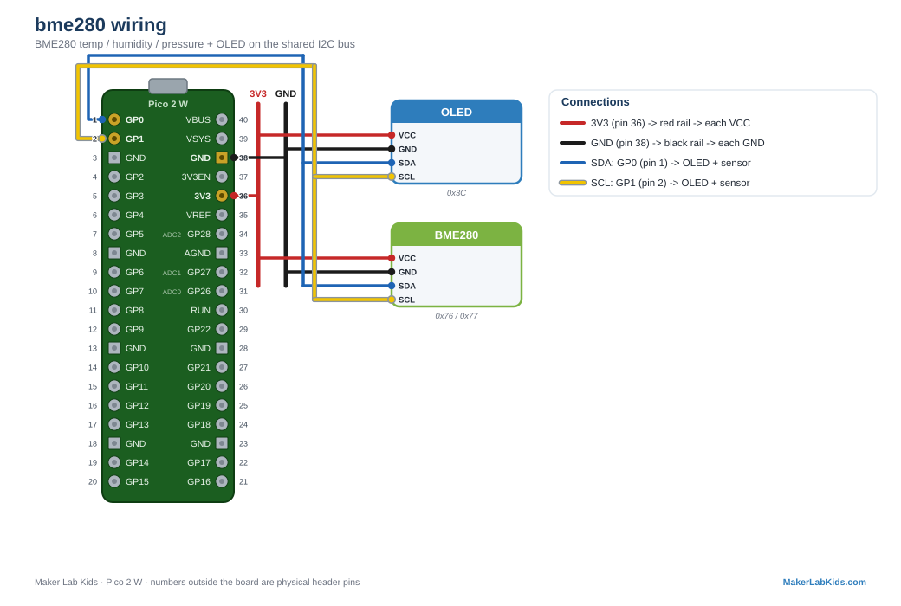
Air sensor. Temperature, humidity and pressure on the I2C bus.
Soil thermometers. Many probes share one wire and one 4.7k resistor.
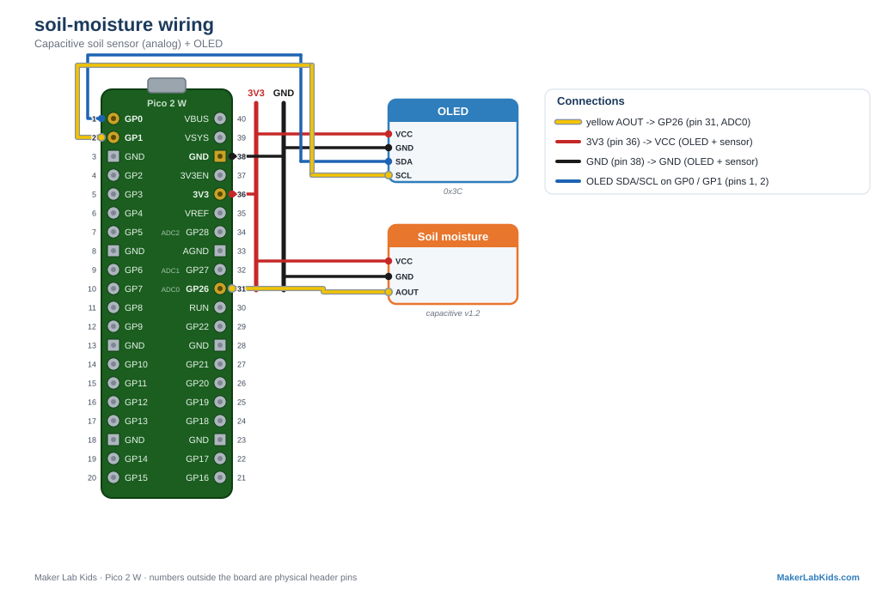
Moisture probe. One analog wire: the wetter the bedding, the lower the voltage.
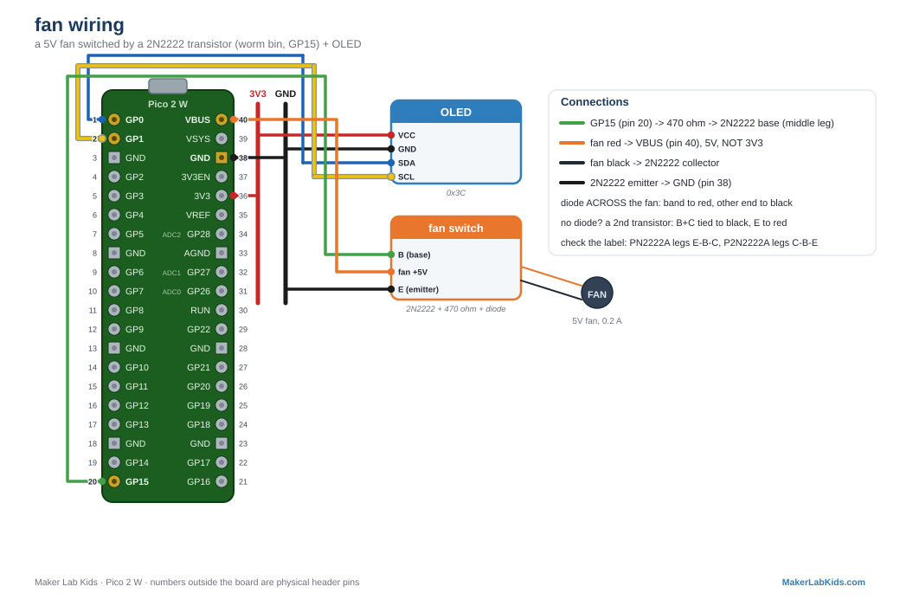
The fan. A transistor switches it, and a diode, stripe on the red side, protects it.